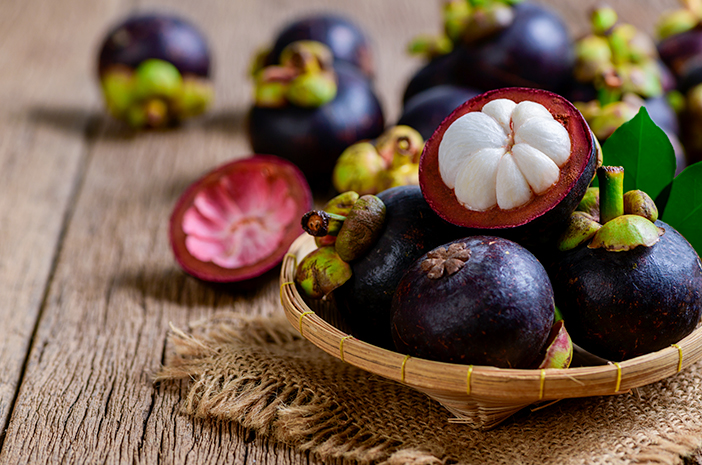
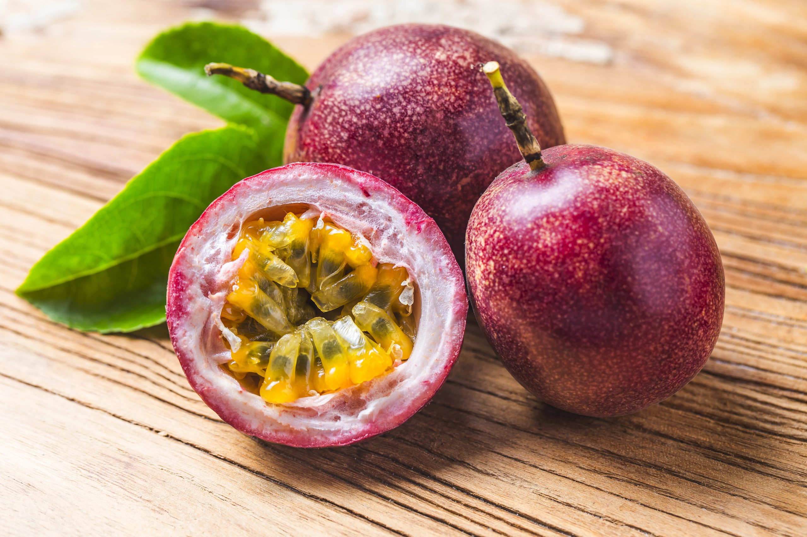
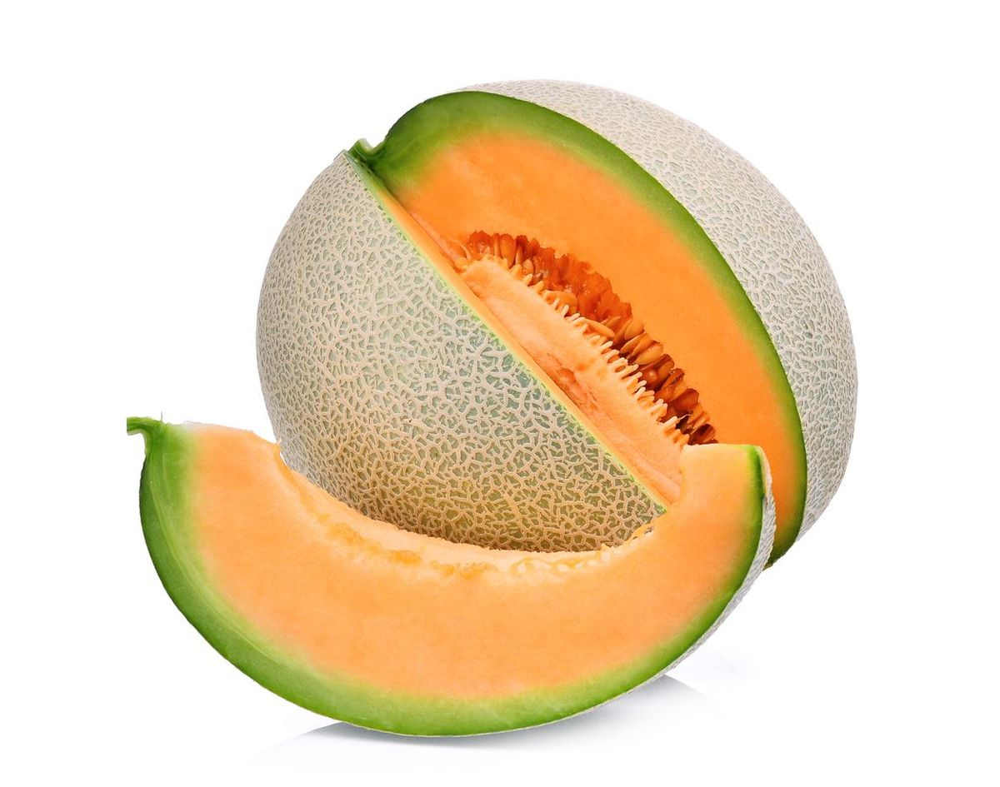

Pengertian
Buah adalah bagian tumbuhan yang berkembang dari bunga setelah proses penyerbukan. Biasanya, buah memiliki biji di dalamnya yang berperan sebagai alat reproduksi tumbuhan. Buah ada dalam berbagai bentuk, ukuran, dan rasa, dan merupakan sumber makanan yang kaya nutrisi untuk manusia dan hewan.
Menurut pengertian dari wikipedia :
Buah adalah hasil reproduksi antara putik dan serbuk sari pada tumbuhan. Buah termasuk organ pada tumbuhan berbunga yang merupakan perkembangan lanjutan dari bakal buah (ovarium). Buah biasanya membungkus dan melindungi biji. Aneka rupa dan bentuk buah tidak terlepas kaitannya dengan fungsi utama buah, yakni sebagai pemencar biji tumbuhan.Buah dalam lingkup pertanian (hortikultura) atau pangan biasanya disebut sebagai buah-buahan. Buah dalam pengertian ini tidak terbatas yang terbentuk dari bakal buah, melainkan dapat pula berasal dari perkembangan organ yang lain. Oleh karena itu, untuk membedakannya, buah menurut pengertian botani biasa disebut buah sejati.
Manfaat
-

- Mencegah Penyakit Serius
- Memenuhi Asupan Vitamin, Nutrisi dan Mineral
- Memerangi Radikal Bebas
- Menjaga Tubuh Tetap Bugar
Mengonsumsi buah setiap harinya dipercaya mampu mencegah kamu terjangkit dari berbagai penyakit serius. WHO menyebutkan bahwa penyakit jantung koroner (ischaemic heart disease) menjadi salah satu penyebab tingginya kematian di Indonesia. Maka dari itu, untuk mencegah hal itu terjadi, cobalah untuk mengonsumsi buah secara rutin. Sebab, ada penelitian yang menemukan bahwa dengan mengonsumsi buah secara rutin dapat mengurangi terkena risiko penyakit jantung, diabetes tipe 2, obesitas, stroke, kanker, dan sebagainya

Untuk menjaga tubuh tetap sehat, kita perlu memenuhi kebutuhan nutrisi, vitamin, dan mineral. Kebutuhan ini bisa kamu dapatkan dengan mengonsumsi berbagai jenis buah. Hampir seluruh alfabet vitamin dapat ditemukan di berbagai buah. Berbagai vitamin dan mineral yang ada di buah ini berfungsi untuk menjaga metabolisme tubuh dan memerangi senyawa-senyawa hasil oksidasi, seperti radikal bebas yang tidak baik untuk tubuh.

Radikal bebas adalah sel-sel tubuh yang telah rusak sehingga berpotensi mengakibatkan berbagai akibat negatif. Jika tidak ditangani dengan baik, radikal bebas ini dapat menyebabkan stres oksidatif, stroke, alzheimer, hingga terburuknya adalah kanker. Untuk memerangi radikal bebas ini dibutuhkan zat antioksidan. Perlu kita ketahui pula bahwa hampir semua buah memiliki zat antioksidan. Dengan mengonsumsi buah secara rutin diharapkan tubuh menerima zat antioksidan, sehingga mampu memerangi radikal bebas ini.

Menurut WHO, seseorang memerlukan asupan serat sebesar 25-29 g setiap harinya untuk mendapatkan tubuh yang sehat dan bugar. Di samping itu, serat juga baik untuk kesehatan usus, mulai dari mencegah masalah sembelit, wasir, dan divertikulosis. Nah, asupan serat ini bisa kamu dapatkan di berbagai buah.
sumber referensi